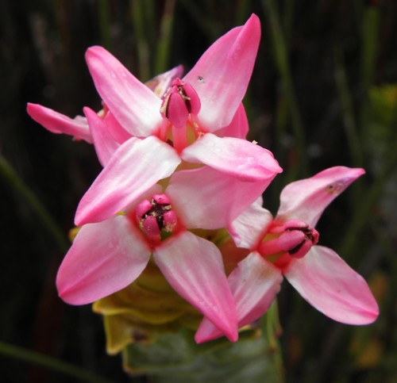

Penaeaceae
Penaea Family
Penaeaceae is a family of flowering plants in the order Myrtales, comprising about 9 genera and nearly 30 species of evergreen shrubs and small trees. The family is remarkable for being almost entirely endemic to the Fynbos biome of the Cape Floristic Region in South Africa. Many species exhibit an ericoid (heath-like) habit with small, leathery leaves. The current circumscription includes the formerly recognized families Oliniaceae and Rhynchocalycaceae.
Overview
The Penaeaceae family is a key component of the unique Fynbos vegetation in South Africa's Cape region, a global biodiversity hotspot. These plants are adapted to the nutrient-poor, sandy soils and Mediterranean climate (winter rainfall, dry summers) typical of this area. Their often small, hard, needle-like or scale-like leaves are characteristic adaptations to reduce water loss.
The family's classification has evolved with molecular data. The core Penaeaceae genera (like Penaea, Stylapterus) were traditionally recognized, while Olinia (formerly Oliniaceae) and the monotypic Rhynchocalyx (formerly Rhynchocalycaceae) were treated separately. Genetic studies revealed their close relationships within the Myrtales order, leading to their unification under an expanded Penaeaceae. This merger increased the morphological diversity within the family, particularly regarding ovary position (superior vs. inferior) and fruit type (capsule vs. drupe).
Flowers are typically 4-merous and often have colorful, petal-like calyx lobes, while true petals are frequently small or absent entirely in the Penaeoideae subfamily. The family has limited economic importance, though some species are locally used or have minor horticultural potential.
Quick Facts
- Scientific Name: Penaeaceae Sweet ex Guill.
- Common Name: Penaea Family (not widely used)
- Number of Genera: Approximately 9 (e.g., Penaea, Stylapterus, Saltera, Sonderothamnus, Brachysiphon, Endonema, Glischrocolla, Olinia, Rhynchocalyx)
- Number of Species: Approximately 29-30
- Distribution: Endemic to the Cape Floristic Region of South Africa.
- Evolutionary Group: Eudicots - Rosids - Malvids - Myrtales
Key Characteristics
Characteristics vary somewhat between the subfamilies (Penaeoideae, Olinoideae, Rhynchocalycoideae):
Growth Form and Habit
Evergreen shrubs or small trees. Many exhibit an ericoid habit, resembling heaths (Erica), with small, crowded, often needle-like or scale-like leaves.
Leaves
Leaves are typically opposite and decussate (arranged in pairs at right angles to the pair above/below), rarely whorled. They are simple, entire, leathery (coriaceous), and often small and ericoid. Stipules are usually present but small, interpetiolar (between the petioles of opposite leaves), sometimes glandular or absent.
Inflorescence
Flowers are solitary in upper leaf axils or grouped into terminal heads, spikes, or cymes. Inflorescences are often associated with colorful bracts that may be larger and showier than the flowers themselves.
Flowers
Flowers are usually bisexual, actinomorphic (radially symmetrical), and typically 4-merous (parts in fours), though sometimes 5-merous in Olinia. A distinct floral tube (hypanthium) is present.
- Calyx: Consists of 4 (or 5 in Olinia) lobes arising from the rim of the hypanthium. These lobes are often petal-like in color and texture (petaloid), persistent.
- Petals: Highly variable. In subfamily Penaeoideae (Penaea, Stylapterus, etc.), petals are typically absent or minute and scale-like. In subfamily Olinoideae (Olinia), 4 or 5 small, scale-like petals are present inside the calyx lobes. In subfamily Rhynchocalycoideae (Rhynchocalyx), 4 small petals are present.
- Androecium: Stamens typically 4, alternating with the calyx lobes, inserted on the hypanthium rim or within the tube. Filaments are short. Olinia typically has 4 or 5 stamens alternating with scale-like petals plus sometimes an outer whorl of 4-5 staminodes or stamens opposite the calyx lobes.
- Gynoecium: Ovary position varies: superior in Penaeoideae; inferior in Olinoideae and Rhynchocalycoideae. Composed of usually 4 fused carpels forming 4 locules (sometimes 3-5 in Olinia). Placentation is axile or apical-axile, with typically 1-4 (sometimes more) ovules per locule. A single simple style with a small capitate or slightly lobed stigma.
Fruits and Seeds
Fruit type also varies by subfamily: typically a loculicidal capsule with 4 valves in Penaeoideae and Rhynchocalycoideae, often remaining enclosed by the persistent hypanthium/calyx. In Olinoideae (Olinia), the fruit is a small, fleshy or leathery drupe containing 1-4 pyrenes (stones). Seeds are usually few, sometimes winged or possessing an aril. Endosperm may be present or absent.
Chemical Characteristics
Plants often accumulate aluminum. Tannins and various flavonoids are commonly present.
Field Identification
Identifying Penaeaceae requires familiarity with the Cape Flora and attention to habit, leaf arrangement, and floral/fruit details:
Primary Identification Features
- Geographic Location: Endemic to the Cape Floristic Region of South Africa (Fynbos biome).
- Habit: Evergreen shrubs or small trees, often with an ericoid (heath-like) appearance.
- Leaves: Opposite (decussate), simple, entire, leathery, often small/ericoid. Small interpetiolar stipules sometimes visible.
- Flowers: 4-merous (mostly), actinomorphic, with a distinct hypanthium. Calyx lobes often petaloid. Petals often absent or tiny (Penaeoideae) or small scales (Olinia, Rhynchocalyx). Stamens usually 4.
- Ovary Position: Superior (Penaeoideae) OR Inferior (Olinia, Rhynchocalyx).
- Fruit: Capsule (most genera) OR small Drupe (Olinia).
Secondary Identification Features
- Bracts: Inflorescences often subtended by colorful bracts.
- Habitat: Found in Fynbos vegetation on sandstone or limestone substrates.
Seasonal Identification Tips
- Flowering Period: Varies by species, often linked to post-fire cycles or seasonal moisture. Flowers or persistent fruits are needed for confident ID, especially to distinguish subfamilies/genera.
- Vegetative State: The combination of ericoid habit, opposite decussate leaves, and Cape Fynbos location strongly suggests Penaeaceae or a few other families (e.g., some Ericaceae, Rhamnaceae, Asteraceae), requiring closer inspection for stipules and other details.
Common Confusion Points
- Ericaceae (Heath Family): Very common in Fynbos, also ericoid shrubs with small leaves. Ericaceae typically have alternate leaves (though sometimes crowded), often urn-shaped or bell-shaped corollas (fused petals), usually 8 or 10 stamens often with appendages/pores, and lack stipules.
- Rhamnaceae (Buckthorn Family): Some genera (e.g., Phylica) are ericoid Fynbos shrubs with small leaves. Rhamnaceae often have alternate leaves, small flowers with a prominent nectar disc, stamens opposite the often hood-like petals, and usually a drupe or schizocarp fruit.
- Asteraceae (Daisy Family): Some Fynbos Asteraceae are ericoid shrubs (e.g., metalasia, ericafolia), but they have characteristic composite flower heads (capitula) and achene fruits, very different from Penaeaceae flowers/fruits.
- Other Fynbos families: Requires careful checking of leaf arrangement, stipules, flower formula (merosity, ovary position, petal presence), and fruit type using local Fynbos guides.
Field Guide Quick Reference (Cape Fynbos)
Look For:
- Ericoid shrub/small tree (Endemic to Cape)
- Leaves: Opposite, simple, leathery, often small
- Stipules: Small, interpetiolar (if visible)
- Flowers: 4-merous, actinomorphic, with hypanthium
- Petals: Often absent or tiny scales
- Stamens: Usually 4
- Ovary: Superior OR Inferior
- Fruit: Capsule OR Drupe (Olinia)
Key Distinctions:
- Opposite leaves (vs. alternate in most Ericaceae)
- 4-merous flowers, often apetalous (vs. Ericaceae usually 5-merous with corolla)
- Distinct fruit types (capsule/drupe)
- Presence of hypanthium
- Endemic distribution
Notable Examples
Examples representing the different subgroups within Penaeaceae:

Penaea mucronata
(Penaea)
A representative of the core Penaeoideae subfamily. Typically an ericoid shrub with small, opposite, pointed leaves. Flowers are often clustered in heads surrounded by colorful bracts. The flowers themselves lack petals but have 4 petaloid calyx lobes, 4 stamens, and a superior ovary developing into a 4-valved capsule.

Olinia ventosa
Hard Pear / Hardepeer
Representing the Olinoideae subfamily (formerly Oliniaceae). A small to medium-sized tree found in Afromontane forest patches within the Cape region. Leaves are opposite, simple, larger than typical Penaeoideae. Flowers are small, 4- or 5-merous, with tiny scale-like petals inside the calyx lobes, borne in dense axillary cymes. Ovary is inferior, developing into a small, red drupe.

Rhynchocalyx lawsonioides
(Rhynchocalyx)
The sole species in the Rhynchocalycoideae subfamily (formerly Rhynchocalycaceae), a rare shrub or small tree found in coastal forests of KwaZulu-Natal and Eastern Cape (slightly outside the core Fynbos region but within the broader Cape Floral Kingdom influence). It has opposite leaves, 4-merous flowers with small petals, an inferior ovary, and a capsular fruit crowned by the persistent calyx.

Stylapterus spp.
(e.g., S. ericoides)
Another genus in the Penaeoideae subfamily, consisting of ericoid shrubs closely related to Penaea. They share the characteristics of opposite, small leaves, 4-merous flowers lacking petals, superior ovary, and capsular fruit, often differing from Penaea in details of the style or stigma.
Phylogeny and Classification
Penaeaceae belongs to the order Myrtales, a large and diverse order within the malvid clade of rosid eudicots. This order includes well-known families like Myrtaceae (eucalyptus, guava), Onagraceae (evening primrose), Lythraceae (loosestrife, crepe myrtle), and Melastomataceae.
Molecular phylogenetic studies have robustly placed Penaeaceae within Myrtales and revealed the close relationship between the core Penaeaceae genera, Olinia (formerly Oliniaceae), and Rhynchocalyx (formerly Rhynchocalycaceae). This led to the expanded circumscription of Penaeaceae to include all three lineages, usually treated as subfamilies Penaeoideae, Olinoideae, and Rhynchocalycoideae. Within Myrtales, Penaeaceae appears to be part of a clade containing other southern African or African groups like Alzateaceae (South America) and potentially Crypteroniaceae (Southeast Asia), although exact relationships among the basal lineages of Myrtales are complex.
Position in Plant Phylogeny (APG IV)
- Kingdom: Plantae
- Clade: Angiosperms (Flowering plants)
- Clade: Eudicots
- Clade: Rosids
- Clade: Malvids
- Order: Myrtales
- Family: Penaeaceae (incl. Oliniaceae, Rhynchocalycaceae)
Evolutionary Significance
Penaeaceae is significant for several evolutionary reasons:
- Cape Endemism: Represents a notable radiation within the Cape Floristic Region, showcasing adaptation to the unique Fynbos environment (ericoid habit, fire adaptations).
- Phylogenetic Link: The inclusion of Oliniaceae and Rhynchocalycaceae demonstrates how molecular data can unite morphologically disparate taxa and reveal deeper evolutionary connections within an order like Myrtales.
- Morphological Diversity within Myrtales: Contributes to the broad morphological spectrum of Myrtales, showing variations in ovary position, petal presence/absence, and fruit type within a single family lineage.
- Biogeography: Its restricted distribution provides clues about the history and diversification of Myrtales lineages, particularly those with Gondwanan connections.